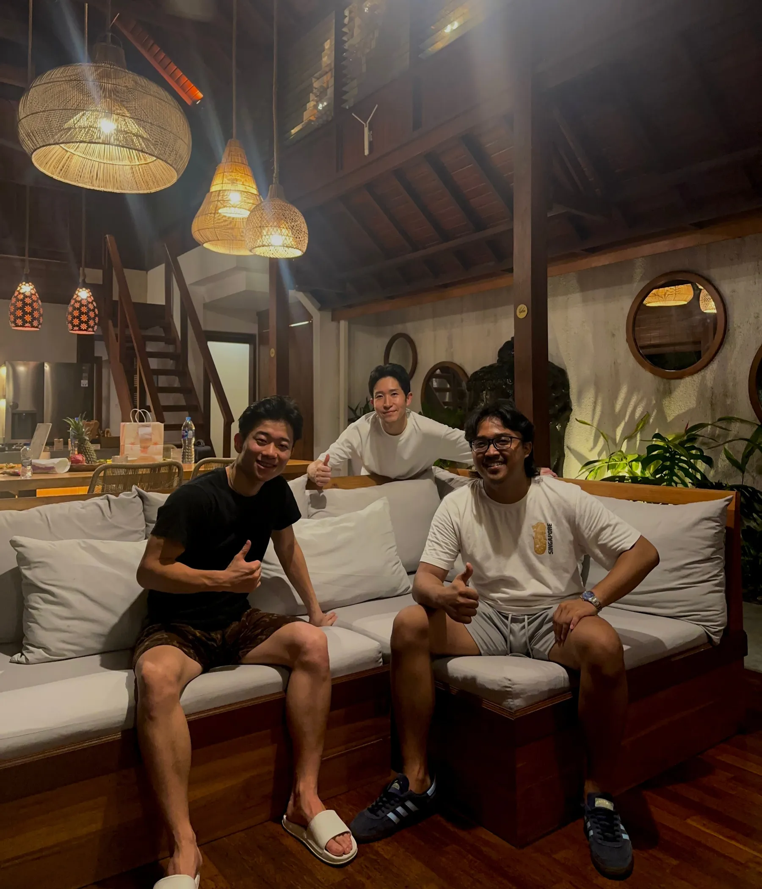
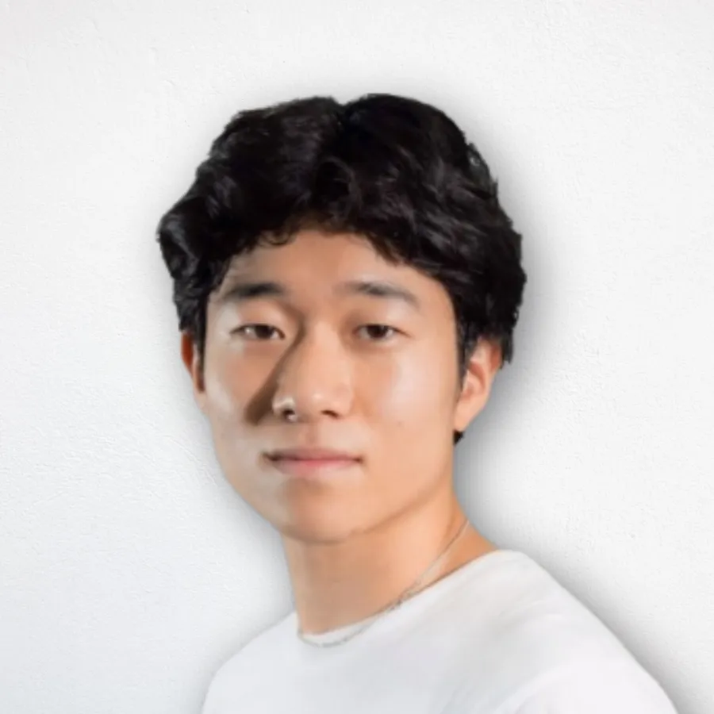

CEO
Keiji Hashimoto
大手通信会社の
 the most
the most  fun-loving
fun-loving  team
team



大手から
既存の
主に
事業展開と
大切にする価値観
会社の
労働の
会社の
行動指針
世界一楽しく
各自の
年齢や
チーム内では

全体
楽しく働くことの意義
今後、
その
「パイ
チームに求める人間像
大手通信会社の

東京生まれ、

愛知生まれ、
サムライスタイルでは

福岡在住。

インドネシア生まれ、

インドネシア出身。

インドネシア出身。